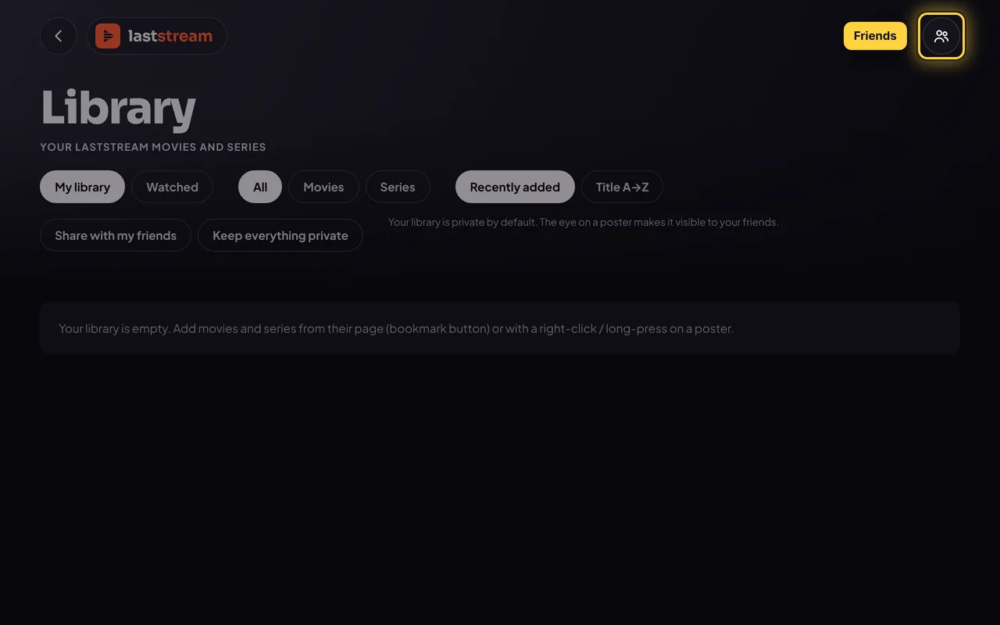
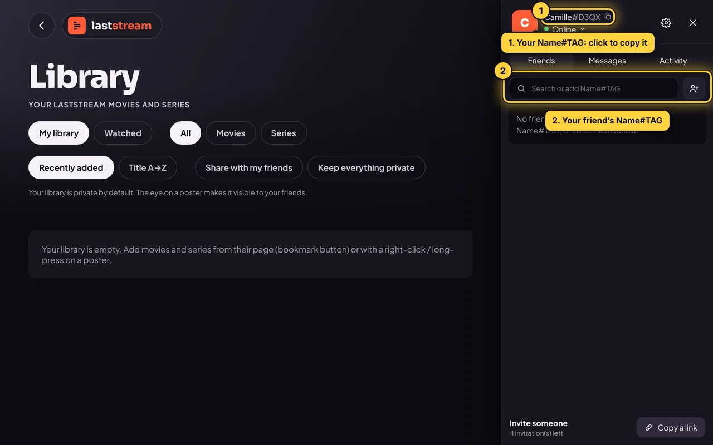
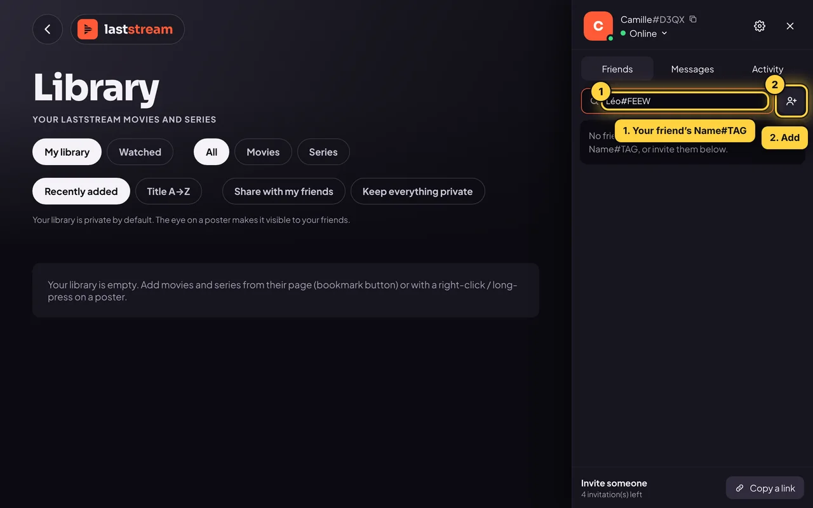
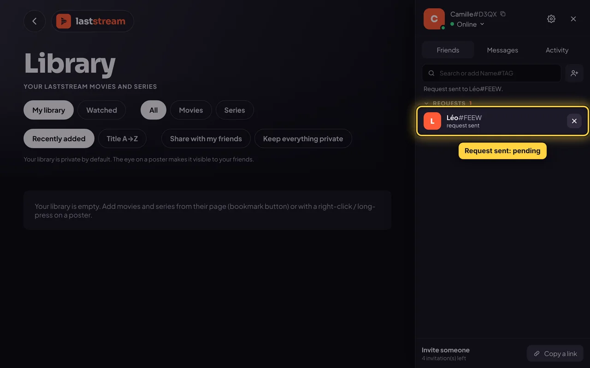
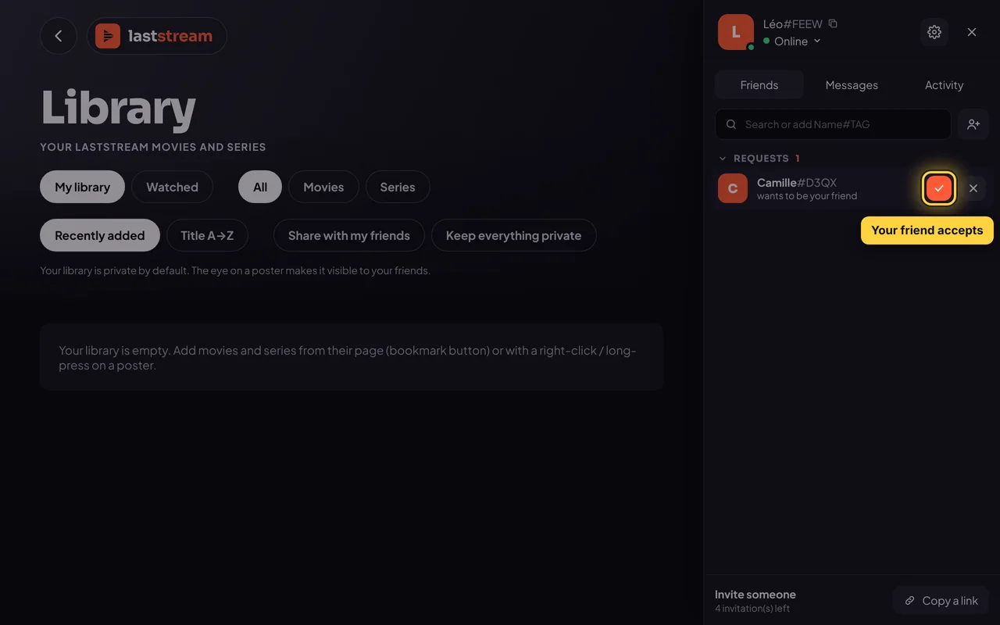

Before you start
- A signed-in account, on an adult profile.
- Your friend’s Name#TAG (they find it in the same place).
Steps
On each screenshot, the yellow frame shows where to tap or click; the numbers give the order. The app is in French: the screenshots show its English translation.
-
Tap the “Friends” button at the top right.

-
At the top of the panel, your own Name#TAG (1): tap it to copy it and send it to your friend. The field below (2) is for adding theirs.

-
Type your friend’s Name#TAG exactly, tag letters included (1), then tap the add button (2).

-
The request shows under “Requests”, “request sent”.

-
On their side, your friend sees your request in their Friends panel and accepts it with the tick.

-
Done: your friend is in your list, with their status (“Online”…).